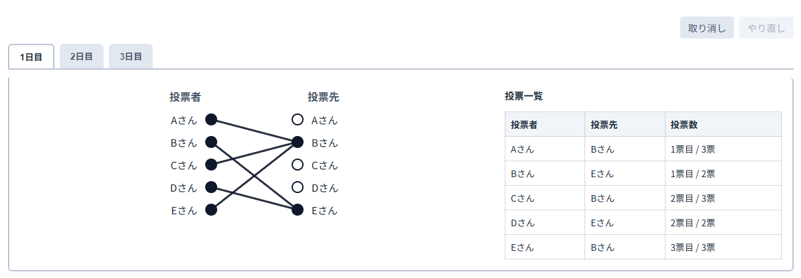

「人狼パワーツール」は人狼ゲームの推理を補助するためのツールです。以下の手順でご利用ください。
入力内容はこのブラウザに自動保存され、再読み込み後も復元されます。上部の「記録して次の試合へ」で、参加者だけを引き継いだ新しい試合を始められます。過去の試合は「試合」の選択欄から開き直して編集できます。保存先は利用中の端末・ブラウザ内です。ブラウザのサイトデータを削除すると試合履歴も消えます。
左カラムのフォームで参加者の名前を登録します。複数人追加したいときは「テキストから登録」をご活用ください。
n日目の列は自動で追加されます。CO者が複数の場合は役職名の隣にある+/-ボタン、デフォルト役職以外の追加は「役職の追加」ボタンから行えます。
投票者と投票先の丸を順にクリックすると1票を登録します。登録済みの票は、投票者の丸・線・投票履歴の行のいずれかを選ぶと、線の外周が赤く表示されます。線の先端を別の投票先の丸へドラッグするか、別の投票先の丸をクリックすると、投票順を保ったまま投票先だけを変更できます。同じペアを選び直しても削除されません。ドラッグを途中でやめる場合は、何もない場所で離すかEscキーを押してください。票を削除する場合は選択後に「選択した1票を削除」を押します。取り消し・やり直しは右上のボタンから可能です。

各日は昼のCO・投票、吊り、夜の噛みの順に判定します。吊り・噛みで同じ人を重複して選ぶことはできません。過去の日の死亡入力を変更すると、後続の重複する死亡入力は解除されます。当日に吊られる人の投票は記録でき、翌日から死亡済みとして扱います。
各プレイヤーの怪しさ (人狼っぽさ) を 0 (白寄り) から 1 (黒寄り) の値で記録できます。初日はCO表が未入力でも、プレイヤーを登録すると利用できます。2日目以降はその日のCO表への入力で作成され、直前のスケールを引き継ぎます。「スケール」タブに切り替え、プレイヤー名のトークンを左右にドラッグして位置を決めてください。矢印キーでも微調整可能で、トークンの色は位置に応じて反転します。
思考の壁打ちにご活用ください。
右上のダウンロードボタンから、CO、投票、試合結果をまとめたPDFをダウンロードすることが可能です。
画面右上のスイッチからライト/ダークモードの切り替えが可能です。